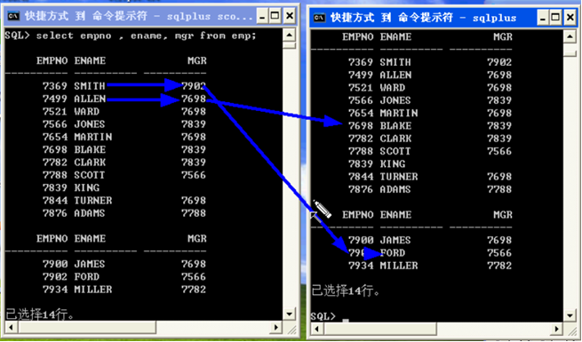

第一课：口令
超级管理员：sqlplus sys/bjsxt as sysdba
普通管理员：system/manager
普通用户：scott/tiger
大数据用户：sh/sh
在cmd下敲：
第二课：SQL语言
Sql语言是在数据库地下进行操作的专门的语言，sql语言本身是一种标准语言，它是一个
国际标准，它定义了套标准SQL1922， SQL1999，SQL在大多数数据库上通用，或许有轻微
的改变
包含四大语句：
- 查询语句 查询语句只有一种就是select语句
- DML语句 DML语句包含Insert,Update,Delete等常用语句
- DDL语句 DDL语句包含Create, Alter， Drop等常用语句
- 事务控制语句 包含Commit， Rollback等常用语句
还有一大类语句：叫DCL语句（Data Control Language），主要用于权限的分配与回收，由于与开发关系不是十分密切，不做重点讲解
Select语句就是从表里把数据选出来
首先熟悉试验中的数据
第一条语句：desc emp;desc 表名; 列出 表头 == 字段 == 列
Varchar2 可变字符串支持国际化 NUMBER(7,2) 7位的数字，2位的小数
每行显示的宽度setlinesize 200; 显示的页数 setpagesize 30;
第三课：table_structures
|
|
第四课：select语句
1.含有别名的sql语句
例子1：
例子2：
例子3：
2.
3.任何含有空值的算术表达式的计算结果是空值
4.select ename||sal from emp; 字符串连接符：||
5.select ename || 'abcdefg' from emp;
6.select ename || 'abcd''efg' from emp;当字符串中含有单引号时，可用两个单引号代表一个单引号
7.set linesize 200;--用于设定每行显示的宽度
8.set pagesize 30;--设置显示的页数
9.select syadate from dual;//显示系统时间
第五课：distinct
1.select distinct deptno from emp; //把deptno值重复的不显示出来
2.select distinct deptno,job from emp; //把deptno,job都重复的都不显示出来；
第六课：where
1.select * from emp where empno = 10; //显示部门编号为10的所有员工的详细信息
2.select * from emp where empno <> 10;//<>是不等于
3.select * from emp where ename = 'KING'; //显示名字为KING的员工的详细信息, 判断字符串是否相等时，字符串要用单引号引起来，单引号中字符串内容是要区分大小写的；比较的按字母顺序
4.select * from emp where comm is (not) null; //为空值的表项查询
5. AND， OR， NOT
例1：Select ename, deptno, sal from emp wheredeptno = 10 and sal > 1000; 查询部门标号为10 并且薪水>1000 的员工
例2：Select ename, deptno, job from emp where deptno = 10 or job = ‘CLEARK; 查询部门编号为10或者工作岗位为CLERK 的员工
例3：select * from emp where sal (not) between 800 and 1500; //取出薪水位于800和1500(包含800和1500)之间的雇员名字和薪水
6.In语句：用于塞选某一个值
7.
8.模糊查询
使用like关键字，和通配符 % 表示0个或多个字符，_表示1个字符, “?”为0个或1个
第七课：order by 使用order by对数据进行排序
|
|
第八课：sql_function
1.select ename,sal*12 annual_sal from emp where ename not like '_A%' and sal > 1500 order by sal desc;
2.select lower(ename) from emp; // Lower()函数 将字符串全部转换成小写,把ename 转换为小写值
3.select ename from emp where lower(ename) like '_a%'; //把ename的值第二个字母为A或a输出
4.select substr(ename,2,3) from emp; //从第二字符截，一共截三个字符。
5.select chr(65) from dual; //求一个与某个ASCII码值对应的字符,结果为A
6.select ascii('a') from dual; //求一个字符的ASCII码值,结果为65
7.round()函数 对参数值进行四舍五入的操作
例子1： Select round(23.652)from dual; //对23.652进行四舍五入操作 24
例子2： Select round(23.652,2) from dual; //对23.652四舍五入到小数点后2位 23.65
例子3： Select round(23.652,-1) from dual; //用负数指定小数点前面几位,对23.652四舍五入到小数点前1位 20
*8.to_char() 用于将数字或日期转换成特定的字符串，
To_char()有两个参数：
第一个参数：需要进行转换的日期或数字
第二个参数：特定的转换格式，对于数字有一下几个格式可以指定：
9 代表数字，若果该位没有数字则不进行显示，但对于小数点后面的部分仍会强制显示
0 代表一位数字，如果该位没有数字则强制显示0
|
|
显示为：BIRTHDATE
—————————
22-3月-87
改为：select to_char(birthdate,'YYYY-MM-DD HH24:MI:SS') from emp; //24制的 没有24为12制的
格式控制符 含义
YYYY、YY —————————– 代表4位，2位数字的年份
MM —————————– 用数字表示的月份
MON —————————– 月份的缩写对中文月份来说就是全称
DD —————————– 数字表示的日
DY —————————– 星期的缩写，对中文的星期来说就是全称
HH24、HH12 —————————12小时或者24小时进制下的时间
MI —————————– 分钟数
SS —————————– 秒数
*9.to_data函数
将特定的字符串转换成日期格式，这个函数有两个参数:
第一参数：自定义的日期字符串
第二参数：指定这个字符串的格式
10.Select * from emp where sal > to_number(‘$1,200.00’,‘$9,999.99’); //求薪水大于1200的员工信息
*11.nvl()函数
用来处理空值，这个函数有两个参数：
第一参数：字段名或表达式，如果这个参数值为null，就返回第二参数值，否则返回第一参数值
第九课：Group function 组函数
1.select max(sal) from emp; //最大值
2.select min(sal) from emp; //最小值
3.select to_char(avg(sal), '$999,999,999.99') from emp; //平均值
4.select round(sum(sal),2) from emp; //求和
5.select count(*) from emp where sal > 1500; //求记录数
6.select count(comm) from emp; //Count()可以对单独字段使用，得到的是所有非空记录的数量
7.select count(distinct deptno) from emp; //Count()可以和distinct一起使用，得到所有唯一值记录的数量
第十课：Group by语句
1.select avg(sal) from emp group by deptno; //首先将现有数据按照部门进行分组，然后再计算每个组员工的平均薪水
2.select deptno,avg(sal) from emp group by deptno;
3.select deptno,job,max(sal) from emp group by deptno,job; //按照部门，和职位的最大薪水进行分组
4.求薪水值最高的人的名称select ename,max(sal) from emp; //出错，因为max只能有一个值，但是等于max的值可能有好几个，不能匹配。
可以写成select ename from emp where sal=(select max(sal) from emp);
Group by 语句应注意，出现在select中的字段，如果没有出现在组函数中，必须出现在Group by语句中。
第十一课：Having对分组结果筛选
1.where是对单条记录进行筛选,Having是对分组结果进行筛选select avg(sal),deptno from emp group by deptno having avg(sal) > 2000;
2.查询工资大于2000的雇员,按照部门编号进行分组,分组后平均薪水大于1500,按工资倒序排列select deptno,avg(sal) from emp where sal > 2000 group by deptno having avg(sal) >1500 order by avg(sal) desc;
///////select-where-group by- having-order by////////
第十二课:子查询
1.select 语句中嵌套select 语句,求哪些人工资在平均工资之上.select ename,sal from emp where sal > (select avg(sal) from emp);
2.查找每个部门挣钱最多的那个人的名字.select ename, deptno from emp where sal in (select max(sal) from emp group by deptno);
查询会多值.正确写法是:
应把select max(sal),deptno from emp group by deptno当成一个表,给这个表起名叫t,然后将两张表连接起来就可以了。语句如下:
第十三课:self_table_connection
自连接：为同一张表起不同的别名，然后当成两张表来用

第十四课:SQL1999_table_connection
1.select ename,dname,grade from emp e,dept d,sqlgrade s where e.deptno=d.deptno and e.sal between s.losal and s.hisal and job <> 'CLERK';
这种写法没有把过滤条件和连接条件分开来,由于这个原因,sql1999标准推出来了.
2.select ename,dname from emp,dept;(旧标准)
select ename,dname from emp cross join dept;(1999标准)
3.等值连接
|
|
4.非等值连接：
select ename,grade from emp e join salgrade s on(s.sal between s.losal and s.hisal);
5.select ename,dname,grade from emp e join dept d on(e.deptno = d.deptno) join salgrade s on (e.sal between s.losal and s.hisal) where ename not like '_A%';
6.select e1.ename,e2.ename from emp e1 join emp e2 on (e1.mgr = e2.deptno);
7.select e1.ename,e2.ename from emp e1 left (outer) join emp e2 on (e1.mgr = e2.empno); //left outerjoin或者left join都可以！即为左连接。
8.select ename,dname from emp e right outer join dept d on (e.deptno = d.deptno); //右连接
9.select ename,dname from emp e full join dept d on (e.deptno = d.deptno); //全连接
第十六至二十三课:求部门平均薪水等级
1.A.求部门平均薪水的等级select deptno,avg_sal,grade from (select deptno,avg(sal) avg_sal from emp group by deptno) t join salgrade s on (t.avg_sal between s.losal and s.hisal);
2.求部门平均的薪水等级select deptno,avg(grade) from (select deptno,ename,grade from emp e join salgrade s on (emp.sal between s.losal and s.hisal)) t group by deptno;
3.哪些人是经理select ename2 from (select e1.ename ,e1.mgr mgr1,e2.ename ename2 from emp e1 join emp e2 on (e1.mgr = e2.empno)) t join emp on (t.mgr1 = emp.empno)
select ename from emp where empno in (select distinct mgr from emp)
4.不准用组函数,求薪水的最高值select distinct sal from emp where sal not in( select distinct e1.sal from emp e1 join emp e2 on (e1.sal < e2.sal) ) ;
5.求平均薪水最高的部门编号
6.求平均薪水最高的部门名称
7.求平均薪水等级最低的部门的部门名称
错误写法:
正确写法:
错误写法：
8.视图:view就是一张虚表,一个子查询 conn sys/bjsxt as sysdba;
grant create table,create view to scott;
conn scott/tiger;
创建视图
使用视图后可以简写
9.求比普通员工最高薪水还要高的经理人的名称
先求普通员工的最高薪水
思考题：
- 求部门经理人中平均薪水最低的部门名称
- 求薪水最高的前五名雇员
- 求薪水最高的第6到第10名雇员（重点掌握）
- 练习：求最后入职的5名员工
- 面试题：比较效率
select * from emp where deptno = 10 and ename like ‘%A%’; （效率比较高）
select * from emp where ename like ‘%A%’ and deptno = 10;（Oracle可能会优化，直接把这条语句转换成上面那条，使效率提高）